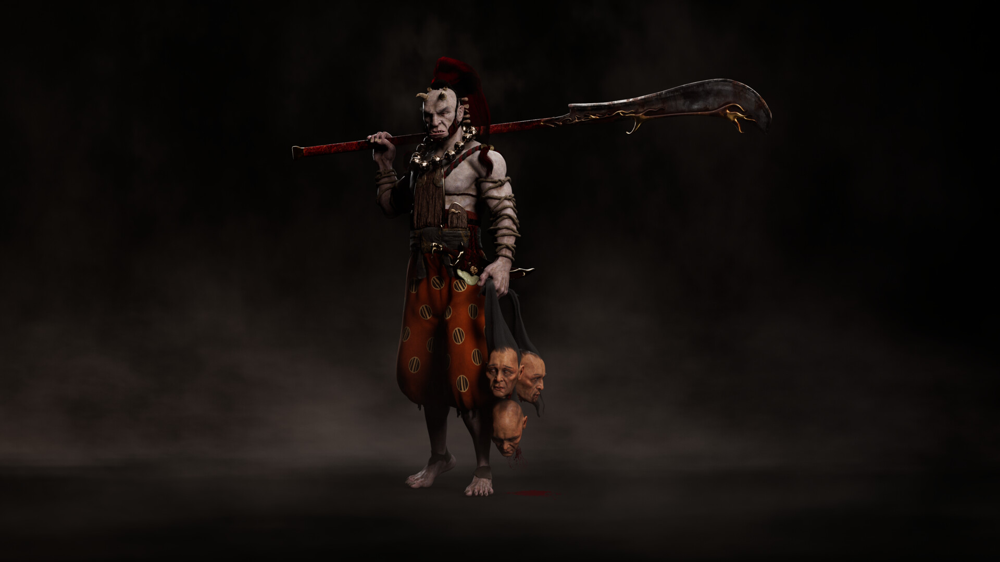
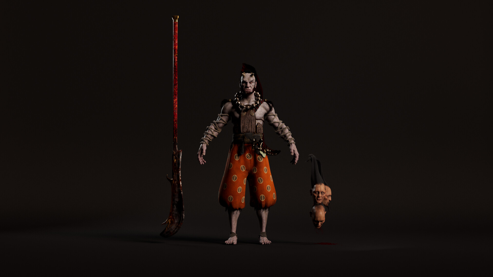
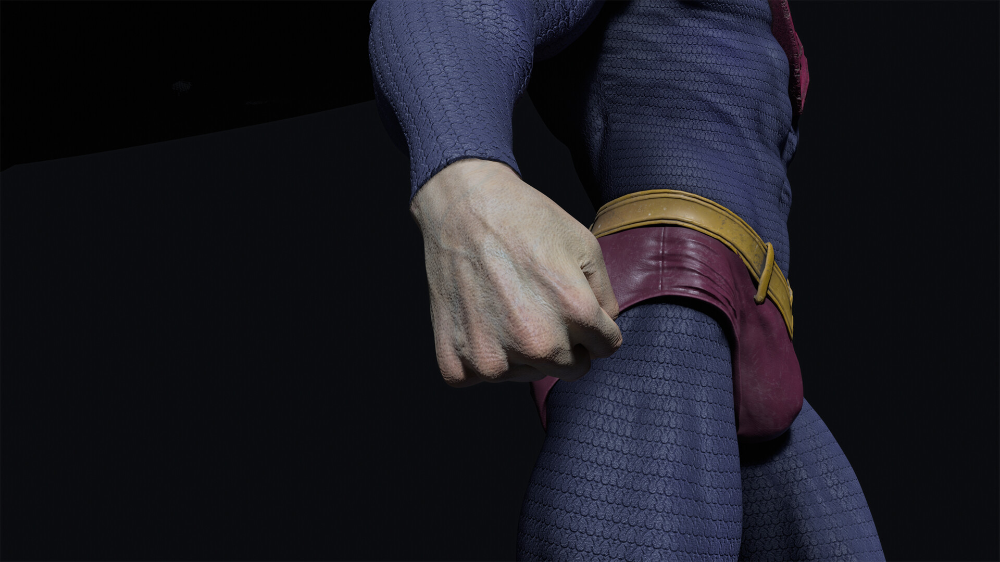
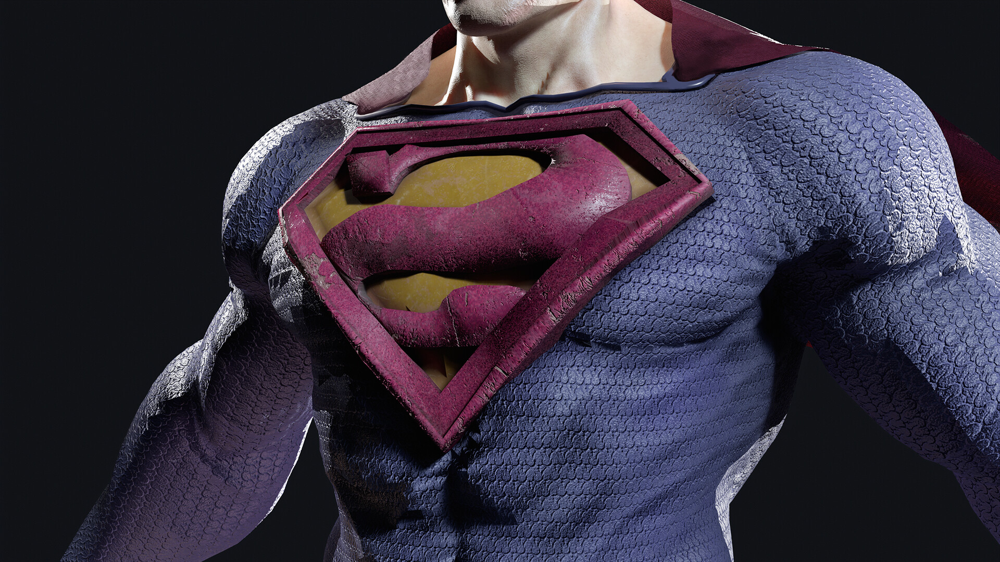

Demonio japonés de tres cabezas, inspirado en un concepto de Pinterest. Con un modelado detallado y texturas realistas, cada cabeza gotea sangre, creando una atmósfera aterradora. Esta obra destaca por su complejidad y su fidelidad a la mitología japonesa. Esculpido en ZBrush, texturizado en Substance Painter y renderizado con Arnold en Maya.

Este proyecto fue realizado durante los estudios de maestría en modelado orgánico en Lightbox Academy. El objetivo de este proyecto es capturar la esencia única de Bizarro, desde su expresión facial hasta su imponente musculatura. Esculpido en ZBrush, texturizado en Substance Painter y renderizado con Marmoset Toolbag. Además, se utilizó Marvelous Designer para simular la capa
 